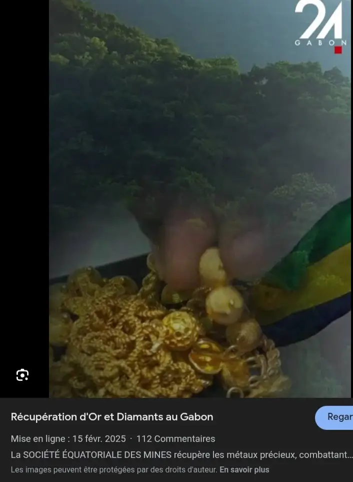
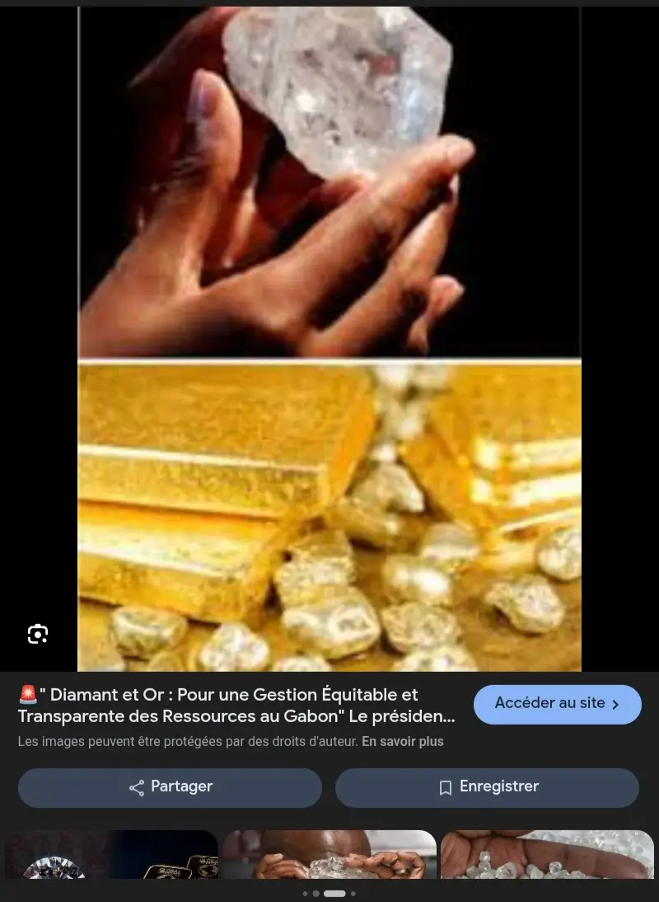
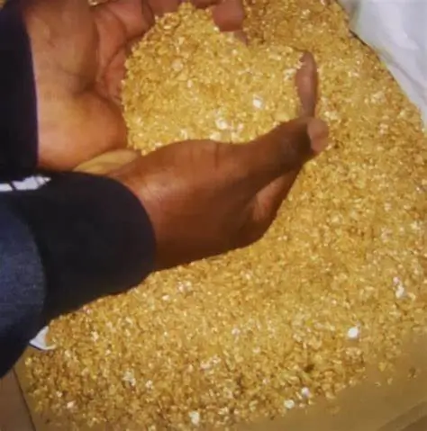
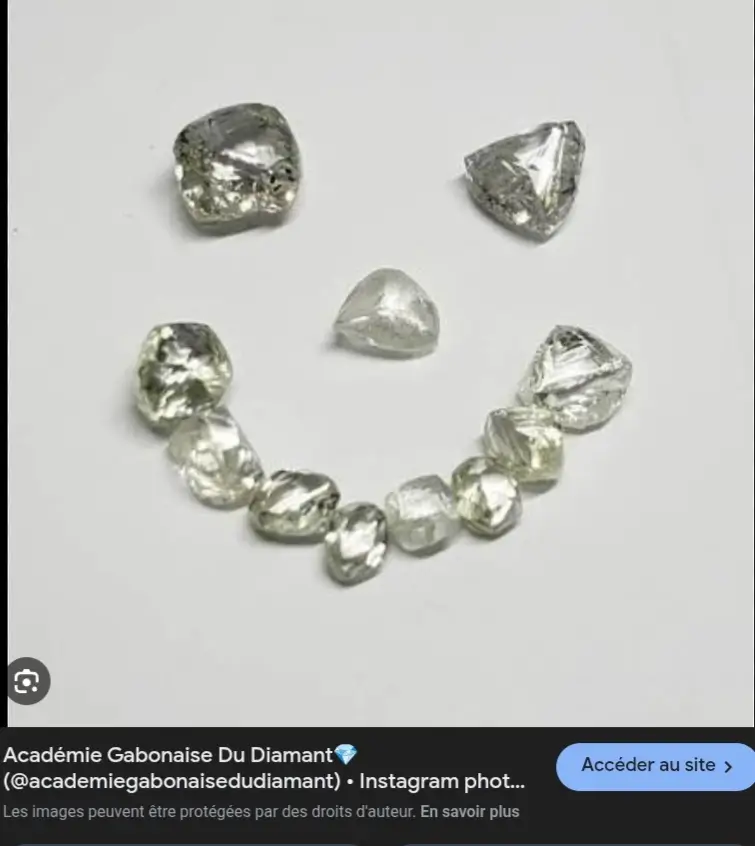

Qu’on est t-il de leur prédécesseurs
Dans de nombreuses régions voisine j'entends parler des élus que je n’ai même pas connu...
Ici à peine sorti de piste nos élus tombent dans les oubliettes
"Le vrai ennemie de l'homme noir reste l'homme noir"






La vérité c'est que le pays ne manque pas de moyens mais nos élus manquent de patriotisme...
C'est derniers n'ont en réalité qu'une seule mission:se remplir les poches.
Ils maintiennent le peuple dans le besoin comme si obsédé par un sentiment de supériorité.
Dans de nombreuses régions voisine j'entends parler des élus que je n’ai même pas connu...
Ici à peine sorti de piste nos élus tombent dans les oubliettes
Si feu Omar Bongo avais travaillé pour son pays, ne me souviendrai-je pas de lui?
Si Ali Bongo avait travaillé pour le peuple, ne serai-je pas fière de chanter ses louanges ?
je n’est pas vécu à l’époque de feu Léon Mba ...
Mais quel image aurons-nous du président actuel après son ou ses mondats?
La délinquance juvénile et l'insécurité sont le résultat de l’ avarisme de nos élus.

AVEC TOUT ÇA, DE QUI SE MOQUE T-ON ?